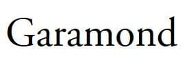
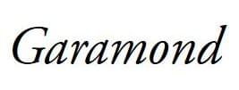

The font-style CSS descriptor allows authors to specify font styles for the fonts specified in the {{cssxref("@font-face")}} rule.
For a particular font family, authors can download various font faces which correspond to the different styles of the same font family, and then use the font-style descriptor to explicitly specify the font face's style. The values for the CSS descriptor is same as that of its corresponding font property.
font-style: normal; font-style: italic; font-style: oblique; font-style: oblique 30deg; font-style: oblique 30deg 50deg;
normalitalicobliqueoblique with angleoblique, and additionally specifies an angle for the slant of the text.oblique with angle rangeoblique, and additionally specifies a range of allowable angle for the slant of the text. Note that a range is only supported when the font-style is oblique; for font-style: normal or italic, no second value is allowed.{{cssinfo}}
As an example, consider the garamond font family, in its normal form, we get the following result:
@font-face {
font-family: garamond;
src: url('garamond.ttf');
}

The italicized version of this text uses the same glyphs present in the unstyled version, but they are artificially sloped by a few degrees.
On the other hand, if a true italicized version of the font family exists, we can include it in the src descriptor and specify the font style as italic, so that it is clear that the font is italicized. True italics use different glyphs and are a bit different from their upright counterparts, having some unique features and generally have a rounded and calligraphic quality. These fonts are specially created by font designers and are not artificially sloped.
@font-face {
font-family: garamond;
src: url('garamond-italic.ttf');
font-style: italic;
}

| Specification | Status | Comment |
|---|---|---|
| {{SpecName('CSS4 Fonts', '#font-prop-desc', 'font-style')}} | {{Spec2('CSS4 Fonts')}} | Adds oblique keyword with angle value |
| {{SpecName('CSS3 Fonts', '#font-prop-desc', 'font-style')}} | {{Spec2('CSS3 Fonts')}} | Initial definition |
{{Compat("css.at-rules.font-face.font-style")}}